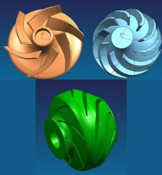
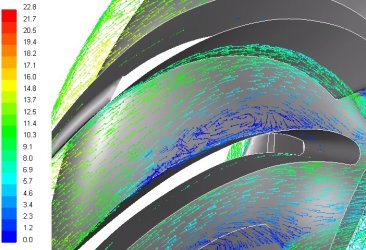

2.
KATI MODELLEME ve SAYISAL AÐ ÇALIÞMALARI
Çalýþmada
öncelikle orijinal durumun analizi yapýlmýþ ve yapýlan iyileþtirmelerin
etkileri bu modele göre deðerlendirilmiþtir. Orijinal pompanýn
katý modeli elimizde olmadýðý için ilk olarak halihazýrda
üretilen bir pompa geometrisi INFOTRON firmasý tarafýndan
taranmýþ ve katý model haline dönüþtürülmüþtür. Daha sonra
bu katý model baz alýnarak analizlerde kullanýlacak olan
akýþ hacmi oluþturulmuþtur. Katý model hazýrlama ve akýþ
hacmini elde etme adýmlarý her yeni iyileþtirme için tekrar
yapýlmýþtýr. Katý model çalýþmalarýnýn hepsi sayýn Cüneyt
Yýldýz tarafýndan yapýlmýþtýr. Þekil 1'de orijinal durumun
taranmasý sonucu elde edilmiþ katý model ve bu model kullanýlarak
elde edilmiþ akýþ hacmi görülebilir.

Þekil 1. Orijinal rotor ve stator geometrileri ve akýþ
hacmi
Bir HAD analizinin yapýlabilmesi için katýmodeli bulunan
akýþ hacminin sonlu sayýda ufak parçalara bölünmesi gerekmektedir.
Bu iþleme sayýsal að oluþturma iþlemi sonucunda oluþan modele
de sayýsal að veya sayýsal model denir. Bu parçalarýn (elemanlar)
sayýsý ne kadar küçük ise sonuçlar o kadar hassas olur.
Ancak bu parçalarýn sayýsý analiz süresine de doðrudan etki
eder. Bu nedenle yüksek gradyenlerin olduðu bölgerde yoðun
diðer bölgelere daha seyrek elemanlar kullanýlarak optimum
bir sayý bulunmak zorundadýr. Yapýlan analizlerin tümünde
eleman saysý kademe baþýna 850.000 civarýnda alýnmýþtýr.
Yüksek gradyenlerin beklendiði kanat yakýnlarýnda daha ufak
kanatlardan uzak bölgelerde daha büyük elemanlar kulanýlmýþtýr.
Orijinal durum için oluþturulmuþ sayýsal aða bir örnek Þekil
2'de görülebilir.
Þekil 2. Orijinal pompa için hazýrlanmýþ sayýsal aðdan
bazý görünüþler
Ýyileþtirme
iþlemleri sýrasýnda toplam 8 ayrý model kullanýlmýþtýr.
Bu modellerin her birinde farklý sadece tek deðiþiklik yapýlmýþ
ve bunun sonucu gözlenmiþtir. Her bir iyileþtirme iþlemi
için katý model ve sayýsal að yeniden hazýrlanmýþtýr.
3.
ANALÝZ ÇALIÞMALARI
Sayýsal að tabakasý oluþturulduktan sonra sýra sýnýr þartlarýnýn
tanýmlanmasýna ve çözüm ayarlarýnýn yapýlmasýna gelir. Burada
dikkat edilmesi gereken birçok husus vardýr. Bunlardan
baþlýcalarý sayýsal model sýnýrlarýnda kullanýlacak sýnýr
þartlarý ve arka planda yapýlacak hesaplamalar için kullanýlacak
sayýsal yöntemlerdir. Model sýnýrlarý Þekil 3' te görülebilir.
Bütün modellerde benzer sýnýrlar kullanýlmýþtýr.
Þekil 3. Model sýnýrlarý
Giriþ sýnýrýnda pressure-inlet sýnýr þartý kullanýlmýþ ve
deðer olarak da 0 pa girilmiþtir.
Çýkýþ sýnýrýnda pressure-outlet sýnýr þartý kullanýlmýþtýr.
Burada ki deðerler analizin amacýna göre deðiþkenlik göstermektedir.
Ýyileþtirme çalýþmalarý sýrasýnda saðlýklý bir karþýlaþtýrma
yapýlabilmesi için çýkýþlarda 16.3 m basma yüksekliðine
karþýlýk gelen 159615 pa deðeri girilmiþtir. Nihai geometriye
karar verildikten sonra orijinal durumla son durumun performans
eðrilerinin karþýlaþtýrýlabilmesi için 7,5 m ile 20 m arasýnda
deðiþik basma yüksekliklerine karþýlýk gelen geri basýnç
deðerleri kullanýlmýþtýr.
Rotorun
dönüþünü modelleyebilmek için Moving Reference Frame yöntemi
kullanýlmýþtýr. Bu yöntemde rotorun dönme hýzý ve dönüþ
ekseni verilerek dönme etkileri modellenebilmektedir. Yapýlan
analizlerde rotorun dönme hýzý için 2890 devir/dakika deðeri
girilmiþtir.
Modellerin
her biri birçok duvar sýnýr þartý da içermektedir. Duvarlardan
rotora ait olanlarýn rotor ile ayný eksen etrafýnda ve ayný
hýzda döndüðü, diðerlerinin ise durduðu kabul edilmiþtir.
Ayrýca tüm duvarlara 0,1 mm ortalama pürüzlülük yüksekliði
ve 0,3 pürüzlülük katsayýsý tanýmlanmýþ böylece pürüzlülük
etkisi de hesaba katýlmýþtýr.
Sýnýr
þartlarýnýn yaný sýra hassas bir sayýsal çözüm alabilmek
için çözüm sýrasýnda kullanýlacak sayýsal yöntemlerinde
uygun seçilmesi gerekmektedir. Akýþýn türbülanslý olup olmadýðý,
mazleme özellikleri ve çözücü ayarlarýnýn doðru olarak belirlenmesi
analizin hassasiyeti açýsýndan oldukça önemlidir.
Analizlerin
tümünde Standart K-Epsilon türbülans modeli kullanýlmýþtýr.
Momentum ve türbülans denklemleri ikinci dereceden yaklaþýmlar
kullanýlarak ayrýklaþtýrýlmýþtýr. Bu þekilde daha hassas
bir sonucun alýnmasý amaçlanmýþtýr.
Analizler
sýrasýnda malzeme olarak su kullanýlmýþtýr. Suyun yoðunluðu
998,2 kg/m3, viskozitesi ise 0.001003 kg/m.s olarak alýnmýþtýr
4.
SONUÇLAR ve DEÐERLENDÝRMELER
Çalýþmada
ilk olarak orijinal durumun analizi yapýlmýþtýr. Yapýlan
analiz modelin içinde her noktadaki hýz ve basýnç gibi deðerleri
verdiðinden pompa içindeki akýþý detaylý olarak incelemek
mümkün olmuþtur. Orijinal durumun analizi sonucu rotor ve
stator içerisindeki bölgelerde elde edilen hýz vektörleri
Þekil 4 ve Þekil 9'da görülmektedir.Yapýlan incelemelerden
ana problemin statorda olduðu, rotorun nispeten yüksek performanslý
çalýþtýðý belirlenmiþtir. Bu durum hýz vektörleri incelenerek
de anlaþýlabilir. Bu nedenle iyileþtirme çalýþmalarýnýn
hepsi stator geometrisi üzerinde yapýlmýþtýr. Toplamda 8
ayrý model denenmiþ ve hepsi için analizler yapýlarak yapýlan
deðiþikliklerin benzer çalýþma þartlarý altýnda performansý
ne kadar deðiþtirdiði belirlenmiþtir. Deðiþikliklerde genel
olarak stator hub ve casing geometrisiyle oynanýþtýr. Son
olarak kanat geometrisi de deðiþtirilerek en yüksek performans
elde edilebilmiþtir.
|
|
|
|
Þekil
4. Rotor hub geometrisinin 3 mm üstünde bulunan
bir yüzey üzerindeki göreceli hýz vektörleri.
Renklendirme hýz büyüklüðüne göre (m/s) yapýlmýþtýr. |
Þekil
5. Rotor hub geometrisinin 6 mm üstünde bulunan
bir yüzey üzerindeki göreceli hýz vektörleri.
Renklendirme hýz büyüklüðüne göre
(m/s) yapýlmýþtýr. |
|
|
|
|
Þekil
6. Rotor hub geometrisinin 10 mm üstünde bulunan
bir yüzey üzerindeki göreceli hýz vektörleri.
Renklendirme hýz büyüklüðüne göre
(m/s) yapýlmýþtýr. |
Þekil
7. Stator hub geometrisinin 3 mm üstünde bulunan
bir yüzey üzerindeki hýz vektörleri.
Renklendirme hýz büyüklüðüne göre
(m/s) yapýlmýþtýr. |
|
 |
|
|
Þekil
8. Stator hub geometrisinin 6 mm üstünde bulunan
bir yüzey üzerindeki hýz vektörleri.
Renklendirme hýz büyüklüðüne göre (m/s) yapýlmýþtýr.
|
Þekil
9.
Stator hub geometrisinin 10 mm üstünde bulunan bir
yüzey üzerindeki hýz vektörleri.
Renklendirme hýz büyüklüðüne göre (m/s) yapýlmýþtýr. |
Þekil
7 ve Þekil 9'dan da anlaþýlabilceði üzere stator içindeki
bir bölgede ciddi bir akým ayrýlmasý belirlenmiþtir. Bu
ayrýlmanýn sebebinin stator kesitindeki ani ve oransýz geniþlme
olduðu belirlenmiþtir. Bu nedenle ilk olarak stator hub
ve casing geometrisi düzeltilmeye çalýþýlmýþtýr. Bunun için
deðiþik 2 boyutlu analizler yapýlýp bir hub ve casing geometrisi
belirlenmiþ ve daha sonra bu geometri 3 boyutlu analizde
kullanýlmýþtýr.